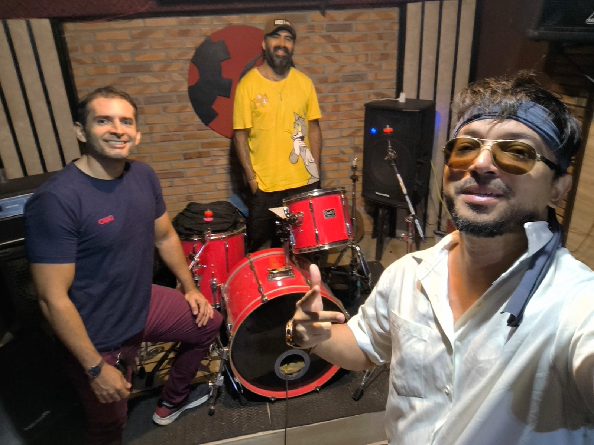
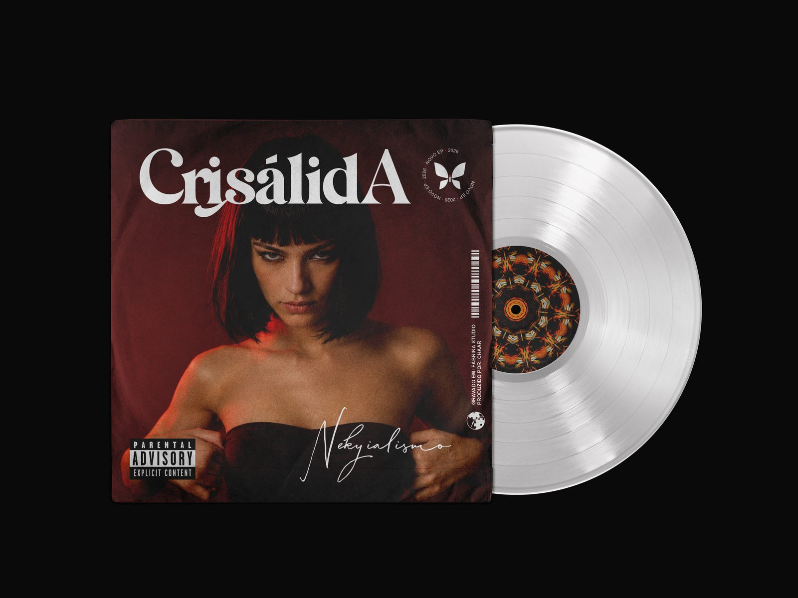
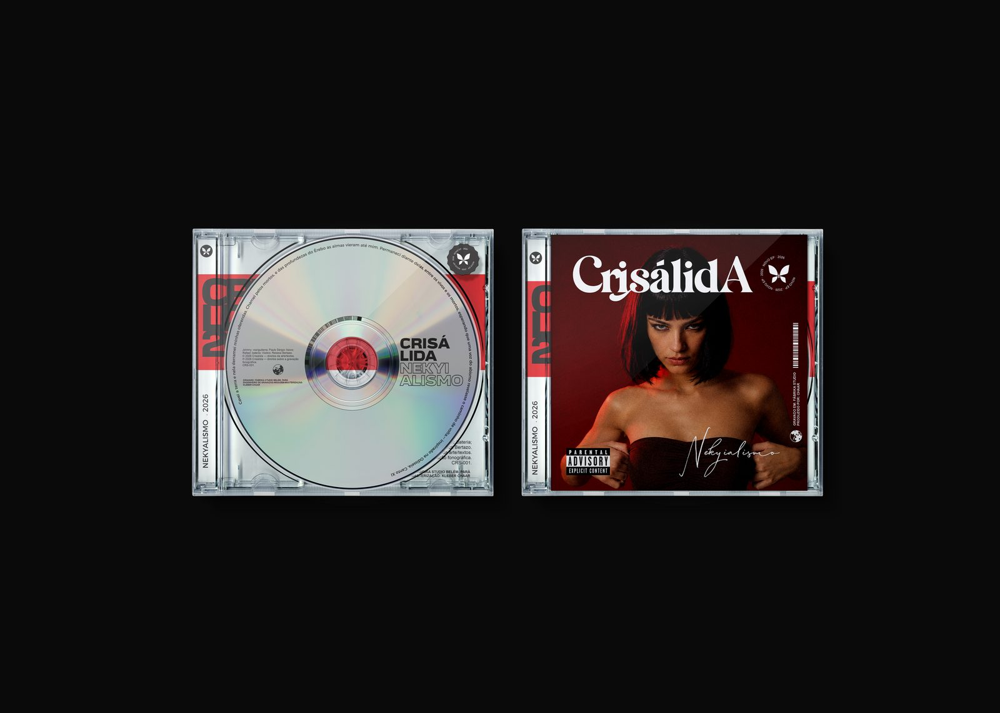
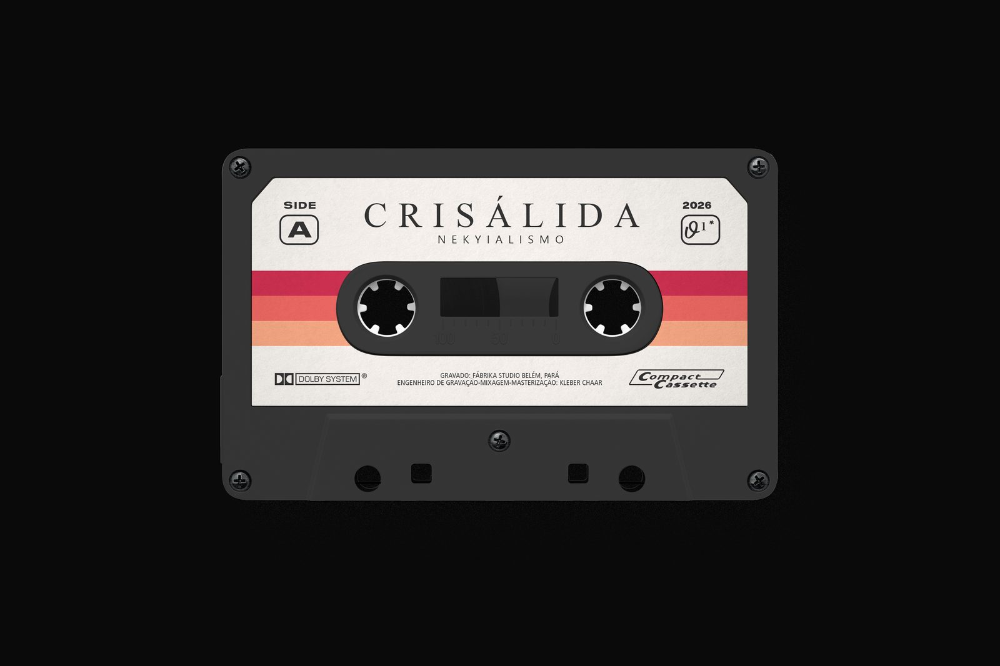

01 — Sobre
Vinte e três anos
até virar registro.
Formada em Belém do Pará em 2002, a CrisálidA atravessa mais de duas décadas de história — marcada por diferentes fases, hiatos e reencontros. A banda define sua música como Rock Envergado: uma identidade construída na mistura de vertentes do rock com sonoridade própria, sem a preocupação de se enquadrar em um único gênero.
A primeira fase aconteceu no início dos anos 2000, quando o grupo começou a desenvolver seu repertório autoral. Depois de diferentes formações e um longo período de interrupção, o projeto ficou adormecido — mas suas músicas continuaram existindo, esperando.
Em 2023 a CrisálidA voltou à ativa. O reencontro abriu espaço para reconstruir o repertório e, entre 2024 e 2026, preparar o retorno definitivo aos palcos — e, principalmente, o registro em estúdio de canções que até então existiam apenas em ensaios e apresentações.
Formação atual
- Johnny Souzaguitarra e voz
- Paulo Sérgiobaixo
- Rafaelbateria
Origem
Belém do Pará, Brasil
Gênero
Rock Envergado
02 — Trajetória
Contagem da fita.
-
000
2002
Formação da CrisálidA em Belém do Pará. Início do repertório autoral e das bases do Rock Envergado.
-
— —
Hiato
Diferentes formações e períodos de interrupção. O projeto adormece, mas as músicas continuam existindo.
-
023
2023
A CrisálidA volta à ativa. Início de uma nova etapa: ensaios, rearranjos e reconstrução do repertório.
-
024–026
2024 – 2026
Trabalho consistente na preparação do material autoral. “Pareidolia”, “Inocente”, “Bode”, “Pinóquio”, “Ampulheta”, “A Maldição de Ondina”, “O Ódio de Joanna d’Arc” e “Mr. Eloy” voltam ao repertório.
-
22.07
22 de julho de 2026
Retorno aos palcos de Belém na Quarta Autoral, no Studio Pub, ao lado de Infesto e Soulmetal.
-
25–27
25 a 27 de julho de 2026
A CrisálidA entra no Estúdio Fábrika, em Belém, para gravar oficialmente “Pareidolia”, “Inocente” e “Bode” — o fechamento de um ciclo iniciado em 2002 e o começo de outro.
03 — Novo lançamento
Nictoplasma
O novo EP da CrisálidA, gravado no Estúdio Fábrika, em Belém do Pará.
Há coisas que só ganham forma quando o dia se cala. Entre lembranças, pensamentos e as pequenas distorções do que sentimos, a noite transforma o disperso em algo quase visível — imagens que surgem onde antes só havia espaço.
Nictoplasma: aquilo que a noite, aos poucos, aprende a revelar.



Faixas do EP
- 01Pareidolia
- 02Inocente Abraço da Morte
- 03Bode Expiatório
04 — Repertório
Canções que sobreviveram ao hiato.
- EP 2026Pareidolia
- EP 2026Inocente Abraço da Morte
- EP 2026Bode Expiatório
- Perfume Secreto
- Pinóquio Parnasiano
- Ampulheta
- A Maldição de Ondina
- O Ódio de Joanna D'Ark
- For-mula
- Mr. Eloy
05 — Letras
Letras das músicas
As três primeiras fazem parte do EP Nictoplasma, que chega no segundo semestre de 2026.
EP 2026Pareidolia
O mar depressão escrito em mi
Sufocando rostos em máscaras que riem
Acordei meus sonhos minha sodomita
E as pragas voltaram-se contra Gizé.
Com aqueles olhos que até parecem mãos.
Encontrei em você toda minha Nictofilia...
EP 2026Inocente Abraço da Morte
É a dor que reverberando-se como uma prostituta
Ela vem como uma nuvem de sangue em meu seis, seis, seis
Hoje à noite a lua brilha coelho, sem precisar do sol
Ela dança, desce e morre sobre a chuva do inferno
Ela cai como uma chuva em meu seis, seis, seis
Crime inocente vênus, corroe meu coração
Ela vem como um veneno dentro de mim
E eu aceito seu inocente abraço da morte
É que eu ainda sinto o gosto dela quando eu beijo a boca dele
E eu enxugo as minhas lágrimas em seu seis, seis, seis
Hoje à noite a lua brinca serpente, ao precisar do sol
E ela cansa, cresce e morre sob a chuva do inverno.
EP 2026Bode Expiatório
Ela vai dar a luz a um aborto
Alma está viva, mas o corpo está morto
Pessoas mortas dão nome as nossas ruas
Leve seu pecado dentro de uma alma nua
Ela sente, ela sabe e ela disse: sangre
Não aguento este fardo tão pesado
Morrei no deserto e levando seu pecado
A historia foi escrita com sangue
E ela sentiu tudo que eu senti.
E sempre ela sabe que o que eu disse: sangue
Eu sou a porra de um bode expiatório
Dissecando Cândido Portinari
Adolf Hitler e o exército em Nuremberg
Pornografia de Salvador Dalí
Imergindo e não emergir
O nascimento é o início da morte
Eu vejo a sombra de Allan Kardec
Violentando Niccolò Paganini;
Eu vejo a porra de um bode expiatório
Distroçando Cândido Portinari
O Esquizofrênico Vincent Van Gogh
Como o gripo de Edvard Munch
Enquanto padres pastam as ovelhas oram
Estalactites e estalagmites
Eu sou a sombra de Allan Kardec
Violentando Niccolò Paganini;
Perfume Secreto
Enquanto você sai por essa porta
Eu continuo vivendo em um caixão
Ela está afogada em sua cólera
Eu preciso do seu benevolente perdão.
Gula anoréxica!
Você sempre pensa que está errada
E como sempre está com a razão
Deixei dentro de nossa vela acessa
O câncer de sua solução.
Somos aquilo que não queremos ser
Essa é a minha obsessão
Eu sou um vírus de um parasita
Que foi atraído por sua rejeição.
Pinóquio Parnasiano
Envenenando meu pálido e cálido coração obsceno é assim que você anoitece-me.
É como a penitência da noite que se arrasta pelo sol sem fim e o seu sorriso se afoga em mim.
Enquanto eu falo e falo, e inocentemente sendo o seu Pinóquio de um coração Parnasiano.
Eu nunca aprendi nada sem que não machucasse alguém de um jeito gaussiano.
Há um esconderijo na sombra onde ninguém pode me ver
A um esconderijo aonde ninguém vai me encontrar!
Você sempre rouba aquilo que você não pode ter
Você me ama de um jeito Calvin Klein.
Ampulheta
Todo o sofrimento do mundo é por causa da minha existência
Eu sou a reencarnação de alguém que ainda não morreu
Mais um gole de álcool e eu termino a minha vodca
Sentindo a agonia da morte todos os dias.
Mate-se e seja o meu melhor amigo suicida
Assim como a areia de um relógio de areia.
Todo o sofrimento do mundo é por causa da sua existência
Ela é a reencarnação de alguém que ainda nem nasceu
Mais um gole de ácido e ela termina com sua mórbida
Sentindo a agonia da vida todos os dias.
A Maldição de Ondina
Eu ainda posso ver e eu ainda consigo escutar
Eu só não posso dormir, pois não consigo respirar
Em uma dia a noite vem e no porto a morte vai
Até que um dia você veio e fudeu meu Calabar!
Ondina....
São só sapatos Bowie, a cada dia respirado é um novo passo a Extrema Unção.
Não são sapatos BOA, a nossa vida destinada em um novo Proxy Ergo Sum
O Ódio de Joanna D'Ark
Eu esperei muito tempo por você aqui, mas ninguém chegou
Se o dia é a noite e a noite é o dia! E o que eu sou?
Eu serei alguém como você assim, que nunca mensurou-se!
E ela ama o modo como você sente a sua dor
Hare Krishna! Queime e sinta dor.
Eu queria usar e ser usado, por suas multidões.
Eu sou um pouco demasiado e imoral
Eu estou comprimindo confortavelmente a sua dor
Eu serei alguém como você, que nunca mensurou-se?
For-mula
Esclerose no lado escuro da lua
Eu desprezo seu ódio por mim
Com a espinha quebrada e sangue escoando das mãos
Matarei um assassino em vão
Formula... for mula...
Galactorreia junte suas mãos na simbiose
Eu desprezo seu amor por mim
Com a espinha quebrada e sangue escoando das mãos
Eu serei um assassino em mãos
Mr. Eloy
Vida sem álcool para consumir.